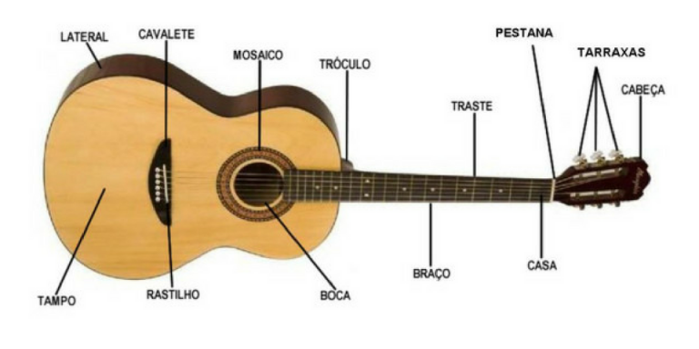

Partes do violão
Já que estamos falando sobre o violão que tal conhecer as partes que o compõem, e assim iniciar os estudos bem mais afiado, sabendo muito mais?! Para desempenhar bem um instrumento é preciso ter conhecimento profundo dele. Alguns músicos dizem que seus instrumentos são continuações de suas mãos e braços de tanta intimidade que possuem com eles. Isso é necessário para criar um envolvimento maior na hora de tocar uma música e poder transmitir sentimento para a audiência. Se você conhece seu instrumento como a palma da mão, saberá identificar corretamente quando alguma coisa não estiver bem.
| Partes do violão – saiba quais são e para que servem |
|
|---|---|
| Abertura ou boca: | Muitas pessoas acreditam que o som escape por ela, mas na verdade ela influencia o balanço de graves e agudos. |
| Braço: | É a parte longa composta pelo braço propriamente dito e pela escala, que é a parte frontal onde ficam os trastes, as casas e as marcações. |
| Cabeça: | É a parte do braço que fica depois da pestana. Influencia diretamente o volume do som e sua sustentação. Quanto maior ela for mais absorção dará à vibração das cordas. Pode ser facilmente identificada na figura acima. |
| Casa: | Espaço delimitado pelos trastes. |
| Cavalete: | É a peça que fica presa no corpo do violão e serve para prender e elevar as cordas na parte de baixo. Prefira os feitos de madeira que darão um som mais limpo. |
| Corpo: | É a maior parte do violão e muitas pessoas também chamam de caixa. É o responsável pela reverberação dos acordes que são tocados. Conforme o tipo de madeira de que é feito existe mudança nos tons. Até mesmo a cola que é usada para montar o corpo interfere na reprodução do som. |
| Tarraxa: | Soltam e afrouxam as cordas. Usadas para afinar o instrumento, diminuindo e aumentando a tensão das cordas. |
| Traste: | As divisões de metal que são responsáveis pela reprodução das notas quando apertamos as cordas nos trastes. |
Como comprar seu primeiro Violão?

- O violão é um instrumento perfeito para todos os iniciantes no mundo da música. Entretanto,
escolher o seu primeiro violão pode ser algo complicado. Por isso, vai algumas dicas que podem te ajudar na escolha:
- Preço; Como iniciante, você precisa de um instrumento que seja confortável de tocar, o som deve ser bom e o violão deve acima de tudo, segurar por bastante tempo a sua afinação. Portanto, escolha algum que seja acessível e de boa qualidade ao mesmo tempo.
- Nylon ou aço- As cordas de nylon são essenciais para qualquer instrumento clássico, e machucam menos os dedos, o que o torna muito atrativo para os iniciantes. E se você está planejando tocar música clássica ou estilos latinos, como o flamenco, uma guitarra de nylon é o caminho certo a trilhar. As cordas de aço são mais apropriadas para rock, pop, blues e praticamente todo o resto que não se enquadra no clássico, porém, para você iniciante pode ser mais desconfortável aprender com elas, pois elas tendem a machucar mais. Contudo, isso é apenas no ínicio e logo você se acostumurá!
- Acústico ou elétrico- O violão acústico é aquele que não possui uma entrada para amplificadores, suas cordas geralmente são de nylon e seu som é mais encorpado. Ele é perfeito para aqueles que querem tocar MPB e outros estilos menos estridentes. Já o violão elétrico é perfeito para aqueles que querem tocar junto de uma banda. Esse tipo de violão possui uma entrada que permite que ele seja amplificado, suas cordas são, na maioria das vezes, de metal e seu som é mais estridente.
- Três modelos de violão que sugiro para você inciar os seus estudos, com preços acessiveis e boa qualide:
- Violão Tagima Memphis AC39
- Violão Giannini N-14
- Violão Harmonics GE-20